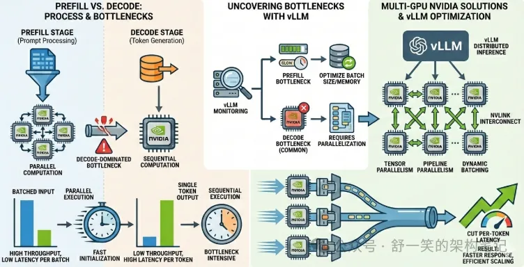
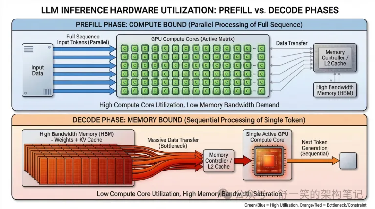
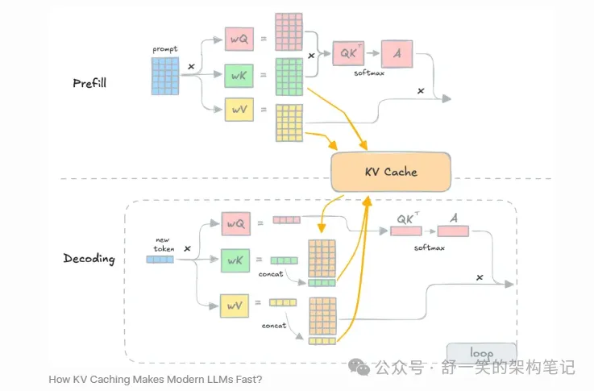
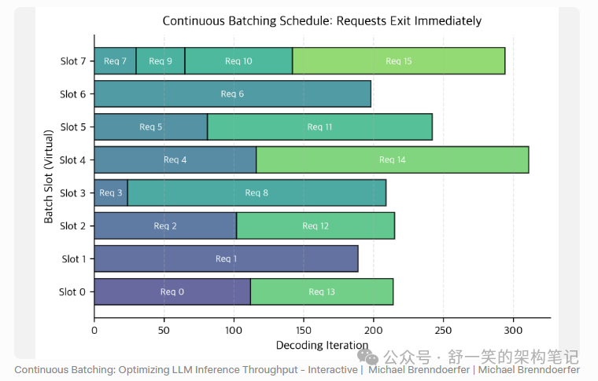

过去两年，大模型几乎重写了整个 AI 应用栈。大家谈模型参数、谈训练语料、谈 Agent、谈多模态，但在真正落地时，最后决定系统体验的，往往不是模型能力本身，而是另一个更现实的问题：
模型到底是怎么跑起来的。
同样一个模型，有的系统首字返回很快，有的系统却要等上好几秒；同样一张 GPU，有的服务能稳定承载高并发，有的系统一上量就抖。表面看，大家都是“调用一个大模型”，本质上，比拼的却是背后的推理系统能力。
这也是为什么，Prefill、Decode、Paged Attention、Continuous Batching、PD 分离，以及 vLLM 这类推理引擎，会在工程圈里变得越来越重要。
很多人对这些概念多少听过，但往往是碎片化理解：知道有 Prefill 和 Decode，却不知道它们为什么必须分开看；知道 vLLM 很快，却说不清它到底快在哪里；知道一个 vllm-openai 的镜像能跑服务，却不清楚镜像里真正封装的是什么。
这篇文章试图把这条链路讲完整：从大模型推理的本质开始，一直讲到现代推理引擎为什么会长成今天这样。

一、大模型推理的本质，不是“回答问题”，而是“预测下一个 token”
先把问题说透。
从用户视角看，大模型是在“对话”“写代码”“翻译”“总结文档”。但从模型内部看，这些任务最终都被统一成了一件事：
在给定上下文的前提下，预测下一个 token。
比如你输入一句话：
请用通俗语言解释一下 Transformer
模型不会直接“理解你的意图然后整段输出答案”。它实际做的是：先根据这句输入形成上下文表示，然后预测第一个输出 token；生成第一个 token 之后，再把它拼回上下文里，继续预测第二个 token；如此循环，直到生成结束。
所以，大模型推理的本质并不神秘，它就是一个典型的自回归生成过程。难点也恰恰来自这里：因为这个过程不是一次性完成，而是一个持续迭代、持续读写上下文、持续调度资源的过程。
也正因为如此，大模型推理从来不是“跑一次前向计算”这么简单。它背后同时牵扯三类问题：
第一类是计算问题。模型本身大，矩阵运算重，算力消耗高。
第二类是内存问题。上下文越长，缓存越大，显存会迅速成为瓶颈。
第三类是系统问题。在线服务里，请求长度不一致、到达时间不一致、结束时间也不一致，GPU 怎么调度，决定了吞吐和延迟。
理解后面所有优化之前，先接受一个基本事实：
.webp)
大模型推理，本质上是“模型计算 + 内存管理 + 在线调度”三者耦合的问题。
二、为什么要把推理拆成 Prefill 和 Decode
如果把整个推理过程拆开看，会发现它天然分成两个阶段，而且这两个阶段的资源特征完全不同。
1. Prefill：先把输入“吃进去”
用户发来的 prompt，往往是一整段现成文本。无论是一句简单提问，还是几千字的文档摘要请求，模型都必须先把这段输入整体处理一遍。这一步，就是 Prefill。
Prefill 干的事情可以概括成两件：
一是把输入 token 逐层送进 Transformer，形成上下文表示；
二是为后续生成建立好历史缓存，也就是常说的 KV Cache。
这里最关键的一点在于：Prefill 阶段的输入是已知的、完整的。
因为整段 prompt 一开始就全部给出来了，所以模型可以在序列维度上做较高程度的并行计算。也就是说，Prefill 往往是一个算力密集型阶段：矩阵乘很多，GPU 计算单元利用率高，但相应地，prompt 越长，Prefill 的耗时也越高。
这也是为什么长上下文请求常常会直接拉高首字延迟。因为用户在看到第一个输出 token 之前，系统必须先把整段输入处理完。
2. Decode：再一个 token 一个 token 地往下写
当 prompt 处理完之后，模型才进入真正的生成阶段，也就是 Decode。
Decode 和 Prefill 最大的不同，是它不再处理“整段已知输入”，而是在每一步只新增一个 token。每生成一个 token，模型就需要拿这个新 token 去和历史上下文做 attention，再预测下一个 token。
这意味着 Decode 有一个非常强的工程特征：
它天然是串行的。
后一个 token 必须依赖前一个 token 的结果，所以你几乎不可能像 Prefill 那样在时间维度上大规模并行。与此同时，随着上下文不断变长，Decode 每一步都要频繁读取历史 KV Cache，因此它常常不是“算不动”，而是“读不动”——瓶颈更容易落在显存带宽和缓存访问效率上。
于是，一个非常典型的对比出现了：
-
• Prefill 更像算力型任务
-
• Decode 更像内存带宽型任务
这就是为什么在推理系统里，大家不会把它们混为一谈。它们看似同属“推理”，但从资源特征到优化方向，其实是两种工作负载。

三、为什么说大模型推理的真正难点，不在模型，而在系统
如果只有单个请求，大模型推理并不难理解：先 Prefill，再 Decode，一路往下生成即可。
但一旦进入在线服务场景，问题立刻变了。
真实系统里，请求不是整齐到达的。有的人只问一句短问题，有的人直接贴一整篇长文；有的请求生成几十个 token 就结束，有的请求可能一直写几千 token。更麻烦的是，这些请求是持续不断流入系统的，不会等上一批全部跑完再来下一批。
于是推理系统必须同时回答几个很现实的问题：
-
• 新请求来了，什么时候插入执行？
-
• 老请求结束了，空出来的 GPU 位置如何立刻利用？
-
• 每个请求长度不同，KV Cache 怎么分配才能不浪费显存？
-
• 长 prompt 请求和短生成请求混在一起时，怎样避免相互拖累？
这时你会发现，决定系统体验的已经不再只是“模型 forward 快不快”，而是系统如何管理不规则负载。
这也是今天所有高性能推理引擎要解决的核心命题：
如何在有限 GPU 资源上，同时兼顾首字延迟、生成速度、并发能力和显存利用率。
围绕这个命题，后来才演化出了 Paged Attention、Continuous Batching、PD 分离，以及 vLLM 这样的系统设计。
四、为什么 KV Cache 会成为推理时代最重要的显存问题
要理解 vLLM，必须先理解 KV Cache。
在 Transformer 的 attention 机制里，每个 token 在每一层都会对应一组 Key 和 Value。生成新 token 时，模型需要拿当前 token 的 Query 去和历史所有 token 的 Key/Value 做计算。为了避免每次都把历史上下文重新算一遍，系统通常会把历史 token 的 K/V 缓存下来，这就是 KV Cache。
KV Cache 的意义非常大：它让模型不需要在每一步重新处理整个历史序列，否则生成成本会爆炸。
但 KV Cache 也带来了另一个更现实的问题：它非常占显存，而且会持续增长。
上下文越长，生成越久，历史 token 越多，缓存就越大。如果是多用户并发，每个请求都在不断累积自己的 KV Cache，显存压力会迅速抬升。到了这个时候，参数本身不再是唯一瓶颈，缓存反而成了服务系统最紧张的资源之一。
传统做法通常是给每个请求分配一块连续显存，用来存它的 KV Cache。这个思路在单机、小规模场景下还能工作，但一旦进入在线高并发环境，就会暴露出几个典型问题：
第一，请求长度不可预测。一开始你很难知道一个请求最终会生成多长。
第二，连续分配容易浪费。预留太大，会造成大量空闲空间；预留太小，又可能中途扩容困难。
第三，碎片问题严重。请求动态结束、动态进入，显存很容易被切得零零碎碎。
第四，动态 batch 场景下很难灵活复用。
这时候，KV Cache 不再只是“一个缓存”，而是一个标准的动态内存管理问题。而 vLLM 最有代表性的贡献之一，就是把这个问题用“分页”的方式重新组织了。

五、Paged Attention 的本质，是把 KV Cache 管理变成“虚拟内存”问题
Paged Attention 之所以重要，不是因为它发明了 attention，而是因为它重新发明了attention 背后的缓存管理方式。
它借鉴的是操作系统里非常经典的思想：分页管理。
操作系统不会要求一个进程的所有内存都物理连续，它只要求逻辑上连续，底层可以拆成多个 page，由页表映射到离散的物理内存。同样的思路，在 vLLM 里被应用到了 KV Cache 上。
具体来说，vLLM 不再要求一个请求的 KV Cache 必须放在一整块连续显存里，而是把缓存切成固定大小的 block 或 page。一个请求逻辑上拥有一段连续的上下文，但物理上，这些 KV block 可以分散在不同位置，通过映射关系组织起来。
这么做的收益非常直接。
首先，显存利用率会明显提高。因为系统不再需要为每个请求预留整块连续空间，而是按需分配 page。
其次，扩容变得简单。请求继续生成时，只需要再申请新的 page，而不是搬迁整段缓存。
再次，释放也更灵活。请求一结束，对应的 page 可以立即回收，快速复用给下一个请求。
最后，它天然适合动态并发场景。因为在线服务的请求长度本来就是波动的，分页比“大块连续分配”更适合这种不规则负载。
之所以叫 Paged Attention，是因为 attention 在读取历史 KV 时，底层访问方式已经不再是“从一段连续数组里顺序读”，而是按照逻辑块映射去找到对应的物理 block，再完成计算。
说到底，Paged Attention 解决的不是模型精度问题，而是推理系统在显存层面的可持续扩展问题。
.png)
六、Continuous Batching 真正改变的，不是 batch 大小，而是 batch 的生命周期
另一个对现代推理系统影响极大的概念，是 Continuous Batching。
在传统深度学习训练或离线推理里，batch 的概念比较简单：收集一批样本，组成一个静态 batch，一起跑完，再处理下一批。这个模式的问题在于，它默认样本长度大致一致，任务边界清晰，而且不会在执行过程中不断有新请求插入。
但大模型在线生成根本不是这种情况。
一个 batch 里，某些请求可能马上结束，某些请求还会继续生成很久；同时，新的用户请求还在不断到来。如果坚持使用静态 batch，系统就会陷入一个很低效的状态：已经结束的请求还占着位置，新请求又只能等下一轮，GPU 经常空转，延迟和吞吐都不好看。
Continuous Batching 的核心思想不是“把 batch 变大”，而是：
让 batch 变成一个动态流动的集合。
在每一轮 decode 迭代之后，调度器都会重新检查当前活跃请求：
-
• 已经结束的移出去；
-
• 还没结束的继续留下；
-
• 新到达、符合条件的请求插进来。
这样一来，batch 不再是一批固定不变的请求，而是一个持续被重组的执行单元。GPU 可以尽量保持满载，系统也不用等“这一整批都结束”才接下一批。
这个机制看起来只是调度层的小改动，但在 LLM 场景下，它本质上改变了推理服务的吞吐上限。因为 Decode 原本就是一步一步往前推进的，既然每一步都要做一次同步，那顺手在这一步里完成请求的加入、退出和重排，就是非常自然的系统设计。
所以 Continuous Batching 的价值不只是“吞吐更高”，更重要的是它让在线推理第一次真正适应了请求长度不确定、到达时间不确定、完成时间不确定的真实世界。

七、PD 分离为什么会成为更高级的推理架构方向
当你真正理解了 Prefill 和 Decode 的资源差异，就很容易明白为什么行业里会出现 PD 分离，也就是 Prefill/Decode Separation。
原因很简单：它们不是同一种负载，却经常被迫混跑在同一批 GPU 上。
Prefill 更偏计算密集，适合做大规模矩阵计算；Decode 更偏带宽敏感，频繁读写缓存。把这两者混在一起，会导致一种典型的相互干扰：长 prompt 的 Prefill 容易压住短请求的 Decode，而 Decode 的高频小步迭代又会拖慢 Prefill 的吞吐。
于是更进一步的系统会选择把它们拆开：
-
• 一组资源专门负责 Prefill；
-
• 另一组资源专门负责 Decode。
这样做的收益是明确的。资源可以针对性优化，调度逻辑也更清晰，不同负载互不干扰，整体稳定性往往更好。
但这件事并不轻松。因为 Prefill 阶段生成出的 KV Cache 不是个小东西，如果 Prefill 和 Decode 不在同一台机器上，就意味着缓存需要跨节点迁移。这背后会带来通信开销、同步复杂度、资源衔接时延，以及更高的系统设计成本。
所以要特别强调一点：PD 分离是一种部署和架构层能力，不是简单地“用了某个镜像就自动有了”。
很多人看到 vLLM 或某些推理框架，就以为 PD 分离是引擎自带特性。更准确的说法应该是：引擎内部天然有 Prefill 和 Decode 两阶段，但是否真正把它们做成物理分离、跨实例调度，是更高层的系统设计问题。
.webp)
八、vLLM 到底解决了什么问题
到了这里，再看 vLLM，就会清楚很多。
vLLM 并不是在“改变模型”，它做的事情是：为大模型推理构建一个更适合在线服务的执行引擎。
它之所以被广泛关注，不是因为它让模型回答更聪明，而是因为它让同一份模型参数在同样的 GPU 上，能服务更多请求、跑出更高吞吐、获得更好的显存利用率。
从架构上看，vLLM 至少解决了三类关键问题。
第一，它重新设计了 KV Cache 的管理方式。Paged Attention 让缓存从连续分配走向分页分配，显存碎片和浪费显著下降。
第二，它强化了动态调度能力。Continuous Batching 让请求在运行过程中持续流动、持续补位，而不是被静态 batch 限死。
第三，它把“模型前向计算”变成了“系统化执行流程”的一部分。也就是说，vLLM 不只是一个 forward runner，它更像是一个懂调度、懂缓存、懂并发的推理 runtime。
如果把一个典型请求放进 vLLM，你大致会看到这样一条链路：
用户请求进来之后，先进入请求队列；调度器判断这个请求当前应该进入 Prefill 还是 Decode 队列；Prefill 处理完之后生成初始 KV Cache，缓存按 block/page 的方式落到显存管理层；随后请求进入持续的 decode 循环，调度器在每一轮都根据活跃状态重组 batch；某些请求结束，释放对应 page；新的请求则随时插入执行流。
这里最值得注意的是：vLLM 的快，不是单点优化的快，而是系统协同带来的快。
它快在显存浪费少了，快在请求补位更及时，快在 GPU 空转更少，快在同一资源池里能维持更多活跃会话。换句话说，它本质上是把大模型推理从“模型调用问题”提升成了“系统资源调度问题”。
.webp)
九、一个 vLLM Docker 镜像，真正封装的到底是什么
很多人在工程落地里第一次接触 vLLM，不是从源码，而是从一个镜像开始，比如：
vllm/vllm-openai:v0.9.2或者你实际在云环境、Kubernetes 环境里看到的镜像地址。这个时候很容易产生一个误解：以为镜像本身就是某种“推理技术”。
其实不是。
镜像只是封装载体。它把一整套可以直接运行的推理服务环境打包了起来。里面通常包括：
-
• Python 运行时及依赖；
-
• CUDA、PyTorch 等底层环境；
-
• vLLM 推理引擎；
-
• OpenAI 兼容接口服务；
-
• 模型加载与采样逻辑；
-
• 调度、缓存、batching 等系统实现。
所以更准确地说，这类镜像的意义不是“它等于 Paged Attention 或 Continuous Batching”，而是：
它把采用了这些机制的推理服务打包成了一个可部署单元。
你启动这个镜像之后，真正运行起来的，往往是一个 OpenAI 风格的 HTTP 服务，前面接收客户端请求，后面由 vLLM 负责调度模型执行。请求进入后，内部依然要经过 Prefill、Decode、KV Cache 分配、批处理调度、采样输出等整套链路。
如果你从 Kubernetes 的视角去理解，会更清楚：
客户端流量进入 Pod，Pod 内的服务进程接收请求，调用 vLLM engine，把用户输入组织成推理任务，然后把这些任务交给 GPU 执行。在这个过程中，镜像只是运行形态；真正决定性能表现的，是镜像里封装的那套推理 runtime。
因此，面对这类镜像，一个更准确的理解方式是：
这不是“模型本身”，也不是“某种优化算法本身”，而是一个把高性能 LLM 推理服务完整封装好的部署载体。
十、今天谈大模型推理，本质上是在谈“AI 时代的操作系统能力”
如果把整篇文章往回收束，你会发现一个很有意思的现象：
这些听上去像模型技术的概念，最后都指向了系统工程。
-
• Prefill 和 Decode 讲的是任务类型拆分；
-
• KV Cache 讲的是显存占用和缓存复用；
-
• Paged Attention 讲的是内存分页与映射；
-
• Continuous Batching 讲的是动态调度；
-
• PD 分离讲的是资源池分工与跨节点协同；
-
• vLLM 则把这些能力整合成了一套可运行的执行系统。
所以今天的大模型推理，越来越像是在重演一遍操作系统和数据库的发展逻辑：当负载规模上来之后，核心竞争力不再只是“能不能算”，而变成了“能不能高效、稳定、可扩展地算”。
这也是为什么，未来真正拉开差距的，很可能不是谁先把模型 API 接出来，而是谁先把推理系统做成基础设施。
从这个角度看，vLLM 的意义并不只是一款开源框架。它更像是一个信号：大模型时代，推理层已经从工具问题，升级成了基础设施问题。
结语
大模型推理的本质，是在有限 GPU 资源上，围绕“下一个 token”这件事，做一整套计算、内存和调度的系统设计。
模型能力决定上限，推理系统决定体验。
Prefill 和 Decode 解释了推理为什么天然分阶段；KV Cache 解释了显存为什么会成为核心瓶颈；Paged Attention 和 Continuous Batching 解释了现代引擎为什么能把 GPU 压榨到更高效率；而 vLLM，则是把这些思想工程化之后的一种代表性实现。
当你再看到一个 vllm-openai 镜像，或者再听到别人谈“大模型推理优化”时，至少可以更清楚地知道：大家讨论的从来不只是模型本身，而是一整套让模型真正服务现实世界的运行机制。